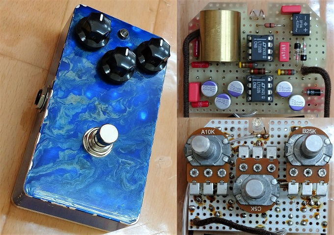
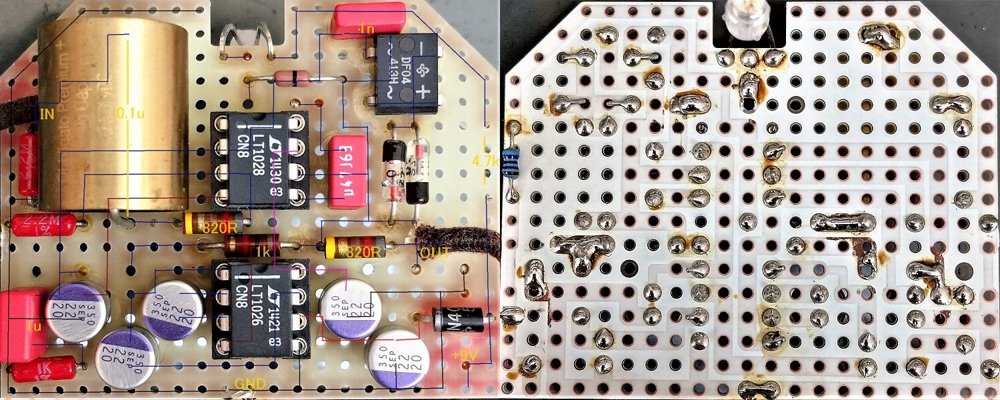
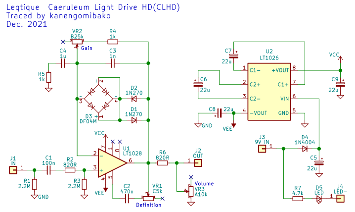
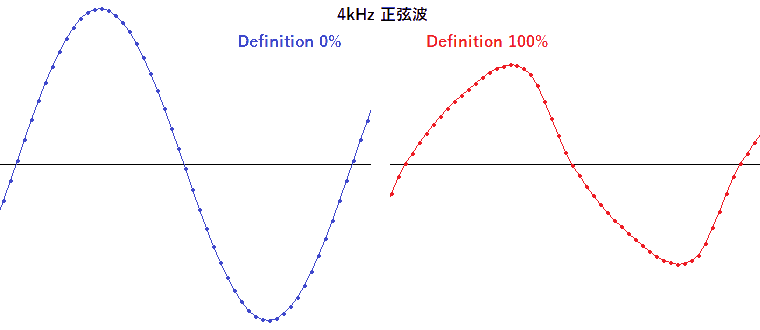
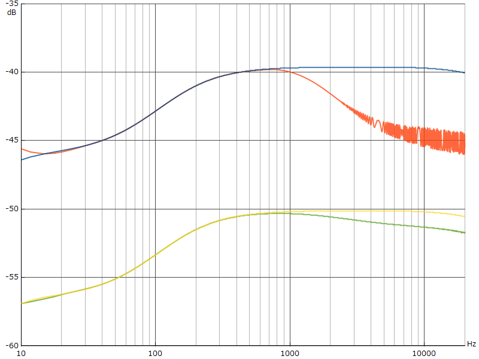

Leqtique CLHD 解析
2022年03月10日 カテゴリー：修理・改造・解析

Leqtiqueといえば人気のブティック系エフェクターブランドだったわけですが、公式の説明文書内容や高価なオペアンプが使用されているのを見ると、自分には合わないかなと感じていました。ただ全く試さないのもよくないかなと思い、中古ですがCaeruleum Light Drive HD(CLHD)を購入し解析してみました。
▽基板画像

ユニバーサル基板で製作されているように見える基板ですが、裏側を見ると普通のプリント基板でした。部品数が少なく、特にわかりにくい所はなかったです。820Ω表記のカーボンコンポジション抵抗は実測891Ωと864Ωでした。ブリッジダイオードは、内部の2つ分しか使われていません。画像検索すると出てきますが、「CLHD Supreme」ではブリッジダイオードが整流用ダイオード2本に置き換わっていたり、OS-CONが積層セラミックコンデンサに変わっていたりします。
▽回路図

シンプルな回路に見えますが、設計者のこだわりがいろいろと詰め込まれているようです。
- LT1026
外付けコンデンサ4個で使えるという便利そうな昇圧ICです。ただ、CLHD Supremeでの故障報告があるので無理に使わない方がいいのかもしれません。
- 出力カップリングコンデンサ省略
通常はオペアンプの出力にカップリングコンデンサを入れ、直流電圧をカットします。CLHDでは、おそらく両電源駆動かつ低オフセット電圧のオペアンプ使用という理由で、カップリングコンデンサが省かれています。基本的には後段の機器に万一でも影響を与えたくないので、真似しない方がよいのではないかと思います。一応問題点を強いて言えば、出力部に直流電圧が触れた場合に保護が弱いということくらいでしょうか。
- LT1028
OVER-COMP（Over-Compensation：過補償）という機能があるシングルオペアンプです。データシートによると、5・8ピン間のコンデンサ容量によりスルーレートが変化します。CLHDではそこにポット（Definition）を入れてスルーレートを変化させるという仕組みです。
下図のように、Definitionを上げてスルーレートが下がると高い周波数の音は波形追従ができなくなり、ゆがみが多くなり音量も下がります。

また、入力音量やゲインが大きいほど波形追従しにくくなるため、高音域が下がりやすくなります。PT2399の特性調査の時と似た状態です。下図はDefinition 0%と100%での周波数特性です。

音量が大きい方（上側）に対し、音量が小さい方（下側）は高音域の変化が少ないです。出力が小さいギターの場合は注意が必要かもしれません。少しわかりにくい面はありますが、他のエフェクターでは見られない面白いコントロールだと思います。